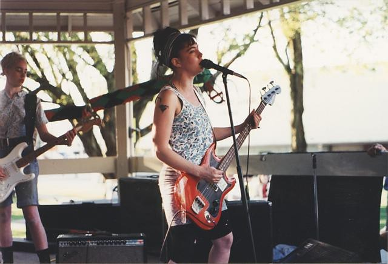
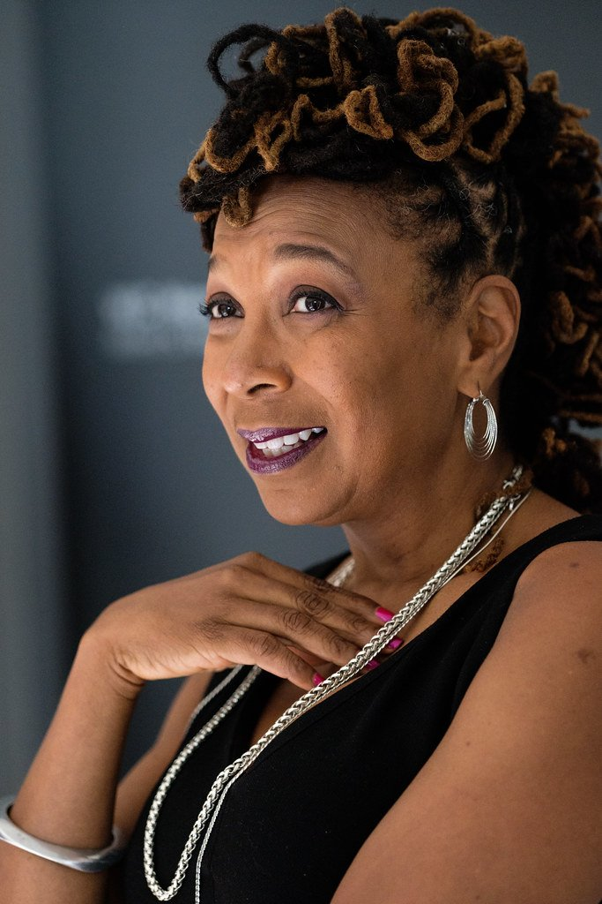
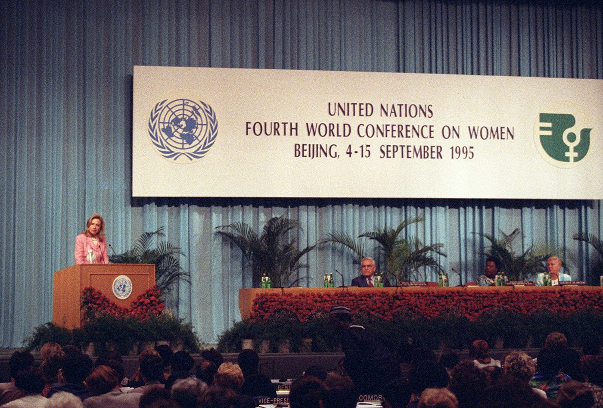

Monday · Feminism
(c. 1991–2010s): after the , many feminisms
A televised harassment hearing, a 1992 essay in , riot-grrrl , and a legal name for compounded harm made feminism look like several projects at once. The number was later. The fights were not one movement with a single face.

“” is a later Anglo-American classroom and magazine name, not what most of the people in this lesson called themselves in 1991. The dates are a convenience: ’s testimony and ’s essay at one end, the early 2010s at the other, before became a different media ecology. The United States is the spine because the numbering is. is a scene, not a synonym for the whole span. is a legal concept that escaped the academy; it is not a personality. Other countries’ 1990s feminisms are contemporaneous — not copies of an American original. 1990s press portraits are often still in copyright. The photographs here are a congressional collection image with no known restrictions, a Creative Commons concert picture, a later Creative Commons portrait (captioned as later), and a U.S. government photograph from Beijing. Where a free picture could not be found, the lesson does without.
Select any words, or tap a dotted term.
- 1989 Intersection , “,” University of Chicago Legal Forum. A legal paper about how employment-discrimination doctrine missed Black women. The word is here. The who-counts problem is older.
- 1991 Backlash / Hill / zines , . testifies, 11 October; confirmed 15 October, 52–48. meetings, shows, and in and Washington, D.C. , “.”
- 1992 The name , “,” , January/February. founded. U.S. elections later nicknamed the : four new women enter the Senate, including .
- 1995 Beijing , Beijing, 4–15 September. Governments adopt the and . A parallel meets in . Not an American meeting with foreign guests.
- 1996–98 Taiwan statutes After the murder of in 1996, Taiwan passes a (1997) and a (1998). The had already been lobbying family law.
- 1999–2000 Parité / Manifesta France revises the Constitution for equal access of women and men to elective office (1999) and passes a (2000). and publish in the United States.
- early 2010s A later ecology The numbered “” is already a classroom label. Hashtag campaigns and belong to a later media system. They are the after, not a fourth-wave lesson in disguise.
Before
What the second wave won, and what a 1991 book called the backlash
The capsule in this archive ends in 1982, when the ’s extended deadline expired three states short. That lesson already covers the ground this one should not tour again: Betty Friedan’s book as a public starting point, consciousness-raising as a method, , , the of April 1977, Houston, Phyllis Schlafly, and the conservative turn that put Ronald Reagan and Margaret Thatcher in office. Those last years are the floor this lesson walks onto. They are not a second visit to the same rooms.
By the late 1980s a public story said feminism had been tried. Magazines ran features on women who had “had it all” and were exhausted. The word circulated as if the remaining task were to relax. In 1991 , then a reporter, published . She argued that the 1980s had produced a cultural and political reaction — in news, in Hollywood, in Washington — that blamed feminism for unhappiness it had not caused. The book is a named source for that diagnosis. It is not a census of every country. It is not a claim that organizing had stopped. Faludi was writing about a mood that treated women’s gains as the problem.
The who-counts fight was unfinished. The had already written, in 1977, that racial, sexual, heterosexual, and class oppression lock together, and that they would not choose which liberation to stand in line for. That statement is in the lesson. It is the parent of much that later gets called . The later word is ’s. The problem is older. A story that pretends Black feminists arrived in 1991 is repeating the error the previous lesson tried to correct.
The era
A hearing on television, a sentence in Ms., a scene with a growl, and a legal word
On 11 October 1991 sat at a witness table in Washington and testified before the . Hill was a law professor at the . She had worked for at the and at the . Thomas, a federal appeals judge, had been nominated to the Supreme Court by President to succeed . Hill told the committee that Thomas had sexually harassed her in those workplaces — comments, pressure, a pattern she said she had not made public because she feared for her career. Every member of the committee that questioned her was a man. of Delaware chaired it. The hearings were televised. Thomas denied the allegations and described the process as a “high-tech lynching for uppity Blacks.” On 15 October the Senate confirmed him, 52 to 48.
The hearings were a public school. Millions of people watched a Black woman describe to a panel of white men, and watched a Black man answer in the language of racial persecution. Viewers did not agree about who was telling the truth. They did agree, in large numbers, that the subject was now national. was already in U.S. law; of the Civil Rights Act had been read to cover it. What the hearings changed was the audience. A private injury, of the kind second-wave organizers had called political, was now a weekend of C-SPAN.
, then twenty-two, wrote about that audience in ’s January/February 1992 issue. The essay is titled “.” Walker is ’s daughter; the magazine said so, and the fact is true, and it is not her whole biography. She described the hearings as a test of whether a woman’s account could matter when it cut across race and party. She ended with a refusal: she was not a . She was the . The sentence named a generation that did not feel finished. It did not, by itself, found an organization. In 1992 Walker and did found the — later the — to put young women into electoral and community work.

The same years, in , Washington, and in Washington, D.C., young women in punk scenes were photocopying , booking shows, and holding meetings they called . — , , , — was one band in that scene. was another. The method was . You did not wait for a New York house to print you. You ran off a stack of copies, handed them out at a show, and told girls to come to the front of the room so they could see and be seen. A manifesto printed in no. 2 in 1991 started from records, books, and fanzines that included girls, and from the refusal to be a polite guest in someone else’s pit. was a scene with chapters and a growl in the spelling. It was not a synonym for . Treating as the face of a decade is the flattening this lesson is trying not to do.
In 1989 , a legal scholar, published “” in the University of Chicago Legal Forum. In 1991 she published “” in the Stanford Law Review. The first paper is about employment-discrimination doctrine. The second is about violence against women of color. Together they gave a name, , to a problem courts and movements kept missing. writing used the word. The word is a tool. It is not a slogan, and it is not a personality.
How it showed, if you want a list instead of a face: and other independent media, including (1993) and (1996); leftover fights from the late-1970s sex wars, with writers arguing against the anti-porn campaigns already named in the previous lesson; girl culture as a market, a joke, and a serious claim; campus feminism standing on , women’s studies, and arguments about date rape and consent. The critique, from Black feminists and from people outside the United States, was that “” was a U.S. magazine label. It grouped very different work under a number. It made some young white women in media the face of a decade that was not only theirs.
The field
A crowded field, then three things to look at closely
A gallery of three portraits is the wrong picture. Name them, then stop treating the names as the . at a microphone. in on the law review. in a gazebo. and at the end of the decade, trying to write the generation down in . at the new organization. on the 1980s, published in 1991. in the 1990s classroom with , and in 2000 with — a through-line from the previous lesson, not a mascot invented in 1992. ’s , 1990, as adjacent theory: gender as something done under constraint, not a membership card. at a United Nations lectern in Beijing, which is not the same thing as American feminism going abroad. in Taipei, whose death is a Taiwanese political fact. ’s later blog and magazine sit at the far edge of this window and belong with a later media system; they are not stretched backward to make a 1991 story look complete.
Slow down for three, as examples inside the field, not as the field. The as a public school. as a method — , shows, a room rearranged. as a legal concept that escaped the academy.
A story
A weekend of C-SPAN, a photocopier, and a traffic accident in the law
The school: for one long weekend the country sat in on a sexual-harassment seminar it had not enrolled in. Hill had to be believed as a lawyer and disbelieved as a woman; believed as a Black witness to workplace harm and suspected as a traitor to a Black nominee. Thomas’s “lynching” sentence named a real American crime and used it to close the subject of sex. The committee had no women on it, which was not a metaphor. People who had never read a feminist pamphlet learned the phrase “” from a split screen. That is what a public school looks like. It is also why the hearings cannot be filed only under “feminism” or only under “race.” The overlap was the lesson, whether or not the senators wanted one.
The method: treated culture as a workplace. If the pit at a show shoved girls back, you put them in front. If music magazines did not write about you, you wrote the magazine. A is a political fact because it is cheap, local, and under your own name. Chapters met in living rooms. Some of the meetings were about rape and incest; some were about guitar chords. When commercial media discovered the scene around 1992 and 1993, some participants stopped talking to reporters. That retreat is part of the method too. A scene that can be summarized as “girl power” on a magazine cover has already lost the photocopier. is the band in the photograph. The method is the stack of paper.

The legal concept: asked what happens when a rule against race discrimination and a rule against sex discrimination are written as if those were two separate lines. In , Black women said they were left out of jobs and then first in line for layoffs. The court looked at GM’s record and saw that the company hired women (who were white) and hired Black people (who were men). Each single-axis claim failed. The harm was at the overlap, so the law had no plaintiff. ’s image was a traffic intersection: injury can come from more than one direction, and a person standing in the crossing is not “half” of each street. In the 1991 paper she took the same tool to shelters, rape law, and movement politics — to rooms that said “women” and meant a white woman, or said “Black community” and treated talking about gender violence as disloyalty. essays borrowed the word. The word does not belong to a wave. It belongs to a doctrinal problem that was already true when wrote in 1977, and that specified for lawyers in 1989.
Elsewhere
Beijing was a world conference; Taipei, London, and Paris were not waiting for a U.S. name

From 4 to 15 September 1995 the United Nations held the in Beijing. One hundred and eighty-nine governments adopted a and a : twelve “critical areas of concern,” from poverty and education to violence, the economy, power, and the girl child. A parallel met in , with tens of thousands of people who were not sitting behind country flags. addressed the official conference on 5 September and said that human rights are women’s rights, and women’s rights are human rights. The sentence travelled. The document is longer than the sentence. Taiwanese feminist groups, including the , were not treated as a national delegation; some Taiwan organizations were denied accreditation, which is part of the 1995 record, not a detail to skip so the map looks tidy.
In Taipei the 1990s women’s movement was a legislative movement, not a reprint of The , which had begun as a magazine in 1982 and become a foundation after martial law ended in 1987, spent the decade on the ’s family chapters — residence, property, children’s names — and on getting women into public life. In 1995 it delivered a family-law draft to the legislature with a large petition behind it. In November 1996 , a feminist official in the , was murdered. The next years produced a (1997) and a (1998). Those statutes are Taiwanese political facts. They do not need a U.S. wave number to be real.
In Britain the same years held more than one current. played riot-grrrl shows. , launched in 1994, sold a “lad” culture of drinking and sex as comedy. Tabloids answered with the “”: a young woman who drank, smoked, and was blunt in public. Some of the women so named treated it as freedom. Some of the coverage treated it as a joke at feminism’s expense. Either way it is contemporaneous. It is not a British branch office of . In France the 1990s argument that can be dated without stretching is : a campaign for equal numbers of women and men on electoral lists. The Constitution was revised on 8 July 1999. A law followed on 6 June 2000. That is a 1990s feminism about who sits in the assembly. It is not a translation of “.”
After
Hashtag campaigns used a different machine
By the early 2010s “” was already a heading in a syllabus. The media ecology had changed. used the phrase “” in 2006 in community work with survivors. In 2017 the hashtag travelled across platforms after public accusations against , and millions of people used it to name assaults that had not had a Senate hearing. That cascade is real. It is also a different machine from a photocopied , a C-SPAN weekend, or a UN platform. It does not make a fourth-wave mascot in this paragraph, and it does not rewind the 1990s as a rehearsal. The unfinished business is obvious: who is believed, whose harm counts as public, what the law can see when two structures hit at once. The next lesson, if there is one, will need its own sources. This one stops before it pretends to be that lesson.
A question
A question to keep asking
When a movement is numbered a third time, whose work has to fit the number in order to be remembered, and whose work is treated as a local exception?
Fun fact
The committee that questioned her had no women on it
When testified on 11 October 1991, every member of the was a man. There were two women in the whole Senate that year: of Kansas and of Maryland. Neither sat on the committee. In 1992 the press named the elections the . Four new women arrived in the Senate in January 1993 — and of California, of Washington, and of Illinois, the first Black woman elected to that body. The nickname is journalism. The arithmetic is the record: an all-male panel on television, then a small change in who held the seats.